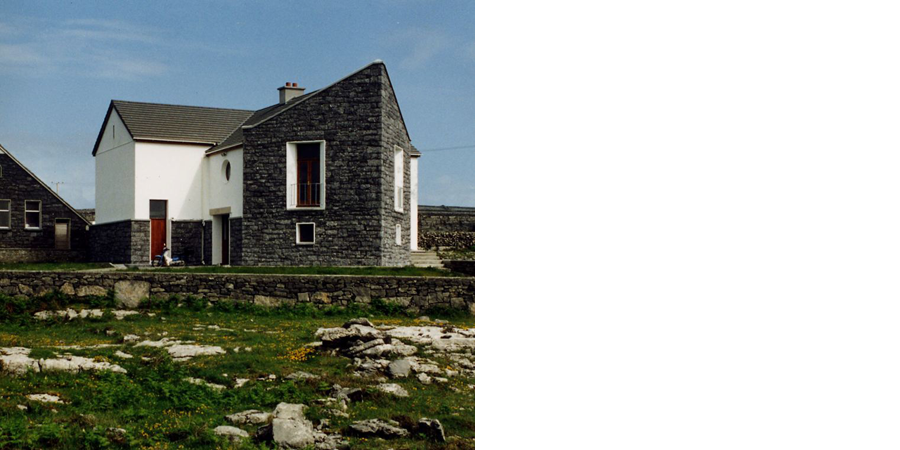

02
/
01
Coláiste Ó Díreain is an Irish language Summer School on the island of Inishmore. It is located in
Fearainn An Choirce in the middle of the island, and is adjacent to the existing National School. The
existing school is a two-roomed building designed by Boyd Barrett and built in the 1950s. The playground
to the rear was divided by a ‘shelter’ which separated the boys from the girls. The school is now mixed
and as part of this project the shelter was removed and rebuilt at the east end of the playground.
Back to education